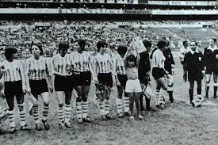

HISTORIA DEL FUTBOL FEMENINO
La historia del fútbol femenino ha estado marcada por la lucha contra prejuicios y barreras sociales.
Primeros Pasos
■ Es posible que las mujeres hayan jugado fútbol desde sus inicios.
■ En 1894, Nettie Honeyball fundó el British Ladies Football Club (BLFC) en Londres, Inglaterra.
■ El 23 de marzo de 1895, el BLFC organizó el primer partido oficial de fútbol femenino entre los equipos North y South.
■ En 1892, la Asociación Escocesa de Fútbol registró un partido femenino.
